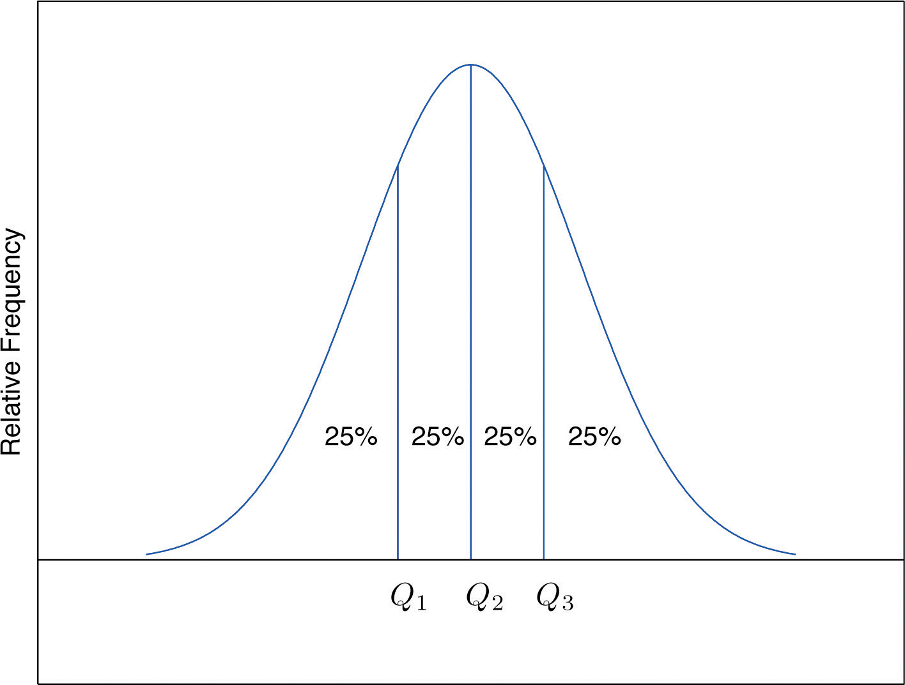
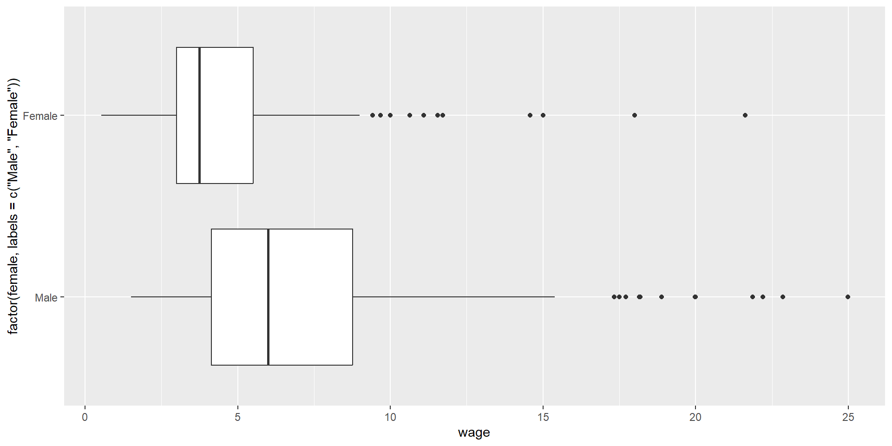
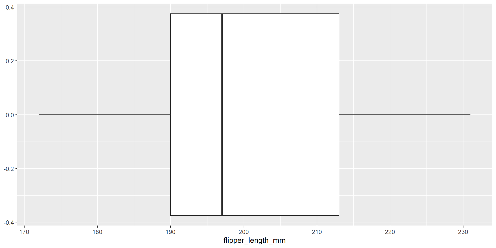
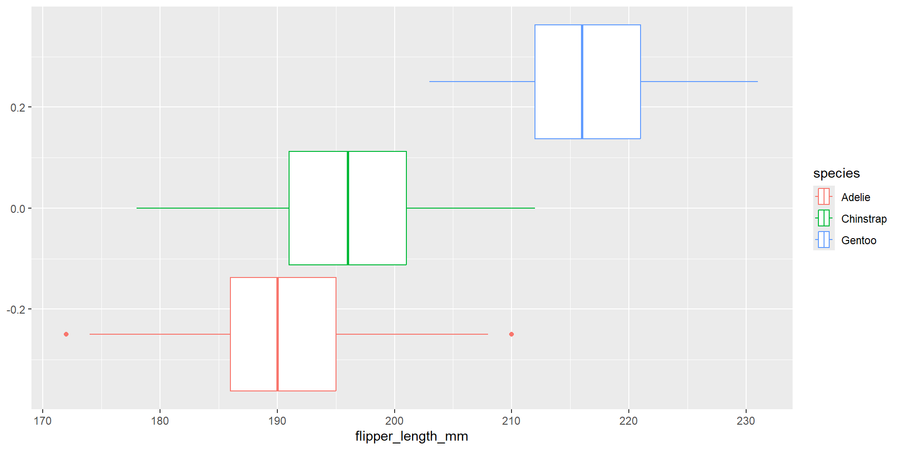
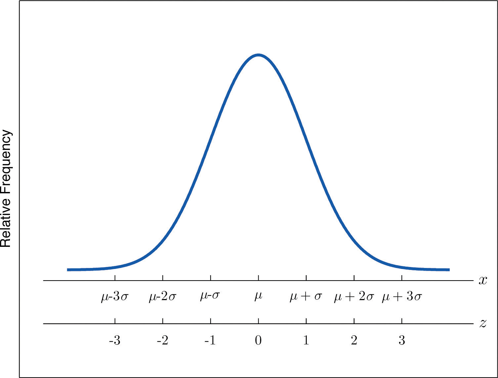
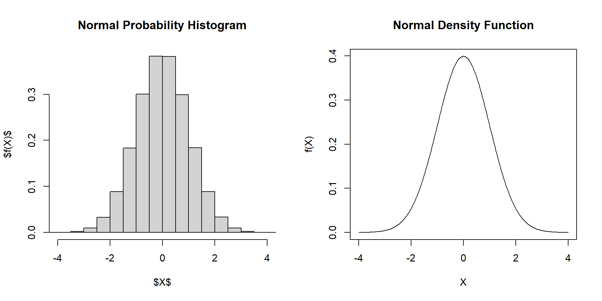
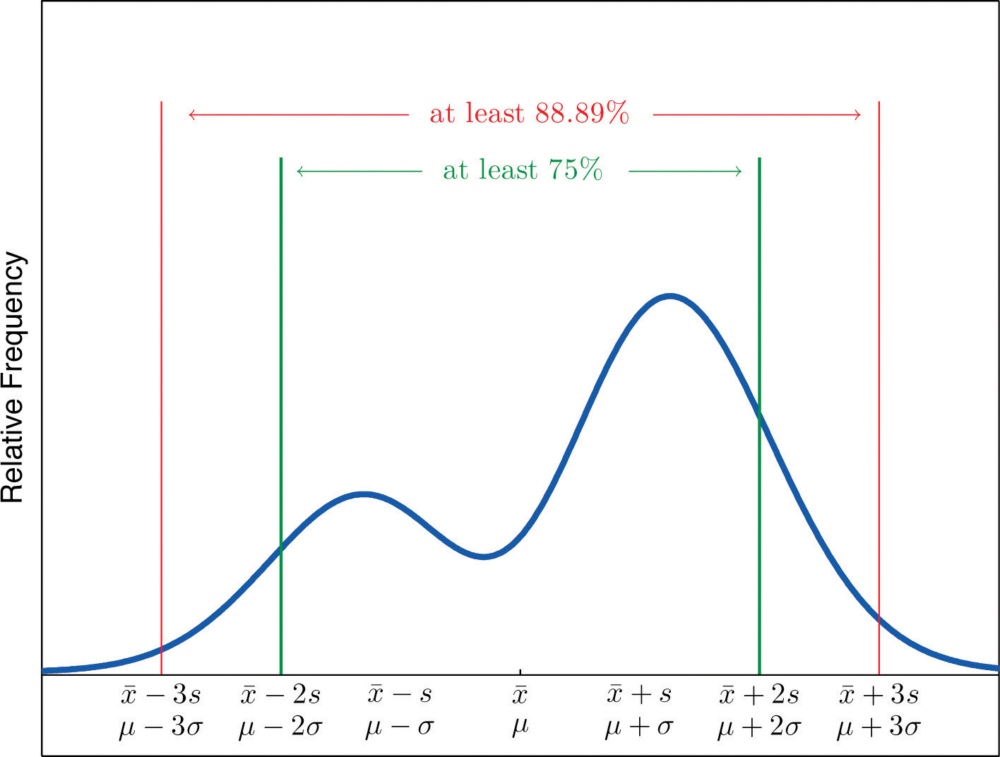

[1] 5 -2 6 14 -3 0 1 4 3 2 3Numerical data (3)
ECON 2B03, Winter 2026
Part A | Lecture 6
Chris Muris, McMaster University
Agenda
Roadmap
- Previously, we:
- Distinguished descriptive vs inferential statistics
- population vs sample, parameter and statistic
- categorical and numerical variables and their distributions
- frequency tables and plots
- Started with
Randquarto - Introduced and computed summary measures
- mean, median, and mode
- range, variance, and standard deviation
- empirical rule, Chebyshev’s theorem
- skewness and kurtosis
- relative position
- boxplots
- Distinguished descriptive vs inferential statistics
Readings and homework
- Readings: SZ 2.4-2.5, IMS 5.5
- Homework: SZ 2.4: 2, 8, 10, 16, 20, 32, 37; SZ 2.5: 6, 12, 26, 28
- This lecture, we:
- Measures of relative position (quartiles, z-scores)
- Five-number summary and boxplots
- Outliers (1.5 IQR rule)
- The empirical rule
- Chebyshev’s theorem
Overview
- Why this matters: knowing where an observation falls relative to the rest of the data is crucial for identifying outliers and comparing across different scales.
- What you will learn:
- measures of relative position (quartiles, z-scores)
- the five-number summary and boxplots
- the empirical rule and Chebyshev’s theorem
In-class exercise (3 minutes)
Begin with Data Set I:
Compute the sample standard deviation of Data Set I.
Bonus: Create Data Set II by adding 3 to every observation: \(Y_i = X_i + 3\).
Predict what happens to \(\bar Y\) compared to \(\bar X\)
Predict what happens to \(s_Y\) compared to \(s_X\)
- Sample size: \(n = 11\)
- Sample mean: \(\bar X = \frac{33}{11} = 3\)
- Compute the squared deviations \((X_i - \bar X)^2\)
- Add them up to get \(\sum_i (X_i - \bar X)^2\)
X sq_dev
[1,] 5 4
[2,] -2 25
[3,] 6 9
[4,] 14 121
[5,] -3 36
[6,] 0 9
[7,] 1 4
[8,] 4 1
[9,] 3 0
[10,] 2 1
[11,] 3 0[1] 210:::
Step 3
- Sample variance: \[s^2 = \frac{\sum_i (X_i - \bar X)^2}{n-1} = \frac{210}{10} = 21\]
- Sample standard deviation: \[s = \sqrt{s^2} = \sqrt{21} \approx 4.58\]
Bonus
- Adding a constant shifts the mean but does not change the standard deviation
mean_X mean_Y
3 6 sd_X sd_Y
4.582576 4.582576 :::
Part I: Relative Position
Measures of relative position
- These tools answer: “Where does an observation sit in the distribution?”
- We will use:
- quartiles (based on percentiles)
- z-scores (standardize using mean and standard deviation)
- Quartiles:
- split the data into four equal-frequency parts
- used for the five-number summary and boxplots
- useful for detecting outliers (via the 1.5 IQR rule)
- Z-scores:
- measure how many standard deviations a value is from the mean
- useful for comparisons across different units/scales
Percentiles and quartiles
- \(P\)th percentile: the value \(x_P\) such that \(P\%\) of observations are \(\le x_P\)
- Percentile rank of an observed value \(x\): the percentage of observations that are \(\le x\)
- The quartiles are the 25th, 50th (median), and 75th percentiles
- Notation:
- \(Q_1\): 25th percentile
- \(Q_2\): the median (50th percentile)
- \(Q_3\): 75th percentile
- In
R: usequantile()

Example: wage data
- Looking at the histogram:
- What do you think is the percentile rank of an hourly wage of 10? 25?
- What do you think is the median wage?
- Can you guess \(Q_1\) and \(Q_3\) from the plot?

Quartiles in R
- Use
quantile():
Interquartile range (IQR)
- Definition: \[\text{IQR} = Q_3 - Q_1\]
- Interpretation:
- the interval \([Q_1,Q_3]\) contains the middle 50% of the data
- the IQR measures the width of that interval
- In
R: use theIQR()function
IQR in R
- Compare
IQR()to quartiles:
Five-number summary
The five-number summary is: \[\left(X_{(1)},Q_1,\text{sample median},Q_3,X_{(n)}\right)\]
In
R: usefivenum()
Example: penguins data
- Compare
fivenum()andquantile():
Part II: Boxplots
Outliers
- An outlier is a measurement far removed from most of the data
- One common rule to identify them is the 1.5 IQR rule:
- compute \(Q_1\), \(Q_3\), and \(\text{IQR} = Q_3 - Q_1\)
- flag points below \(Q_1 - 1.5\,\text{IQR}\) or above \(Q_3 + 1.5\,\text{IQR}\)
Boxplots
- A boxplot is a graphical summary based on the five-number summary:
- box: ends at quartiles \(Q_1\) and \(Q_3\)
- line: median drawn inside the box
- whiskers: extend to farthest points within 1.5 IQR
- outliers: dots for points more than 1.5 IQR from box ends
- In
ggplot: usegeom_boxplot()
- Source: R graph gallery

Example: wage boxplot
- Based on the boxplot:
- Is the wage distribution left-skewed, symmetric, or right-skewed?
- What feature of the boxplot makes you say that?
Boxplots by group
- Compare wages by sex:

- The boxplot suggests an association between
sexandwage- the typical (median) wage is higher for men
- the wage distribution for men is more spread out (larger IQR)
Example: penguins boxplot
- For flipper length in the Palmer penguins, there are no outliers:

- What do you learn from the following boxplots?

Part III: Empirical rule and Chebyshev’s theorem
Interpreting the standard deviation
- From our textbook:
You probably have a good intuitive grasp of what the average of a data set says about that data set. In this section we begin to learn what the standard deviation has to tell us about the nature of the data set.
- We will look at:
- the empirical rule
- Chebyshev’s theorem
Z-scores
- The z-score standardizes an observation (relative position in units of standard deviations)
- For a sample: \[z = \frac{X - \bar X}{s}\]
- For a population: \[z = \frac{X - \mu}{\sigma}\]
- Interpretation:
- \(z > 0\): above the mean
- \(z < 0\): below the mean
- \(|z|\): number of standard deviations from the mean
- A z-score is the number of standard deviations a value is from the mean.

Empirical rule
- If a data set has an approximately bell-shaped relative frequency histogram, then:
- \(\approx\) 68% of the data lie within \(1 \sigma\) of the mean
- \(\approx\) 95% of the data lie within \(2 \sigma\) of the mean
- \(\approx\) 99.7% of the data lie within \(3 \sigma\) of the mean
- Note: the word approximately matters here.
Normal distribution (bell-shaped)
- A bell-shaped histogram refers to a normal (Gaussian) distribution.
- Key features:
- single peak at the mean, median, and mode
- symmetric about the mean
- tails extending indefinitely in both directions
Example: the normal (Gaussian) distribution

Chebyshev’s theorem
- For any numerical data set:
- at least 3/4 of the data lie within \(2 \sigma\) of the mean
- at least 8/9 of the data lie within \(3 \sigma\) of the mean
- at least \(1 - 1/k^2\) of the data lie within \(k \sigma\) of the mean (\(k > 1\))
- Applies to all distributions (not just the normal distribution)

Exercises
Exercise: converting a z-score
A measurement \(x\) in a sample with mean 10 and standard deviation 3 has z-score \(z=2\).
- Find \(x\).
- Explain why \(x>10\) without computation.
- What if \(s=1\)?
- What if \(z=1\)?
- \(x = 10 + 2(3) = 16\).
- A positive z-score means the value is above the mean.
- If \(s=1\), then \(x = 10 + 2(1) = 12\).
- If \(z=1\), then \(x = 10 + 1(3) = 13\).
Exercise: exam z-score
Mean exam score is 49.6 with standard deviation 1.35. Dromio’s z-score is −1.19.
- Is the score above or below average?
- What was the actual score?
- Below average (negative z-score).
- \(49.6 - 1.19(1.35) \\approx 48.99\).
Exercise: empirical rule proportions
A bell-shaped distribution has mean \(\\mu=2\) and standard deviation \(\\sigma=1.1\).
Approximate the proportion of observations: 1. Above 2. 2. Above 3.1. 3. Between 2 and 3.1.
- Above 2: 0.50.
- Above 3.1 (one SD above mean): about 0.16.
- Between 2 and 3.1: about 0.34.
Exercise: Chebyshev’s theorem
Thirty-six students took an exam with mean 80 and standard deviation 6. A rumor says five students scored 61 or below.
Can the rumor be true? Explain briefly using Chebyshev’s theorem.
Using 3 standard deviations: scores below 62 are more than 3 SD below the mean. Chebyshev says at least \(8/9\) of observations lie within 3 SDs, so at most 4 of 36 can be outside \([62,98]\). The rumor of five students at 61 or below cannot be true.
Conclusion
These slides started from J. S. Racine’s slides for ECON2B03 at McMaster University.
Readings are from
- SZ: D. Shafer and Z. Zhang (2012), “Introductory Statistics”
- IMS: M. Çetinkaya-Rundel and J. Hardin (2023), “Introduction to Modern Statistics”
References